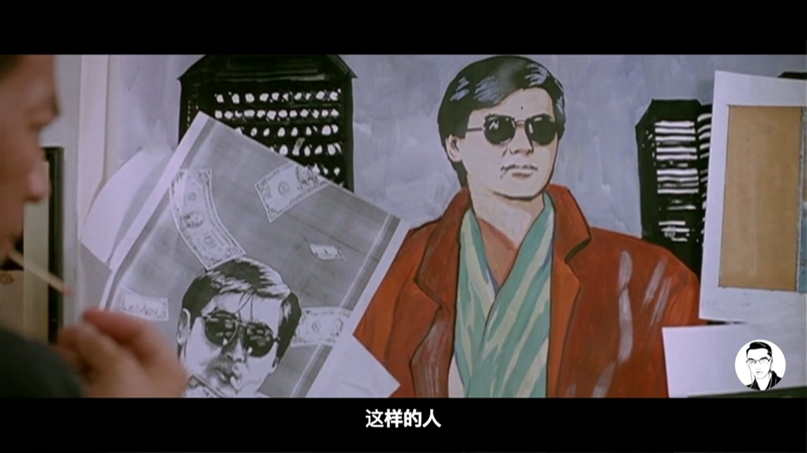
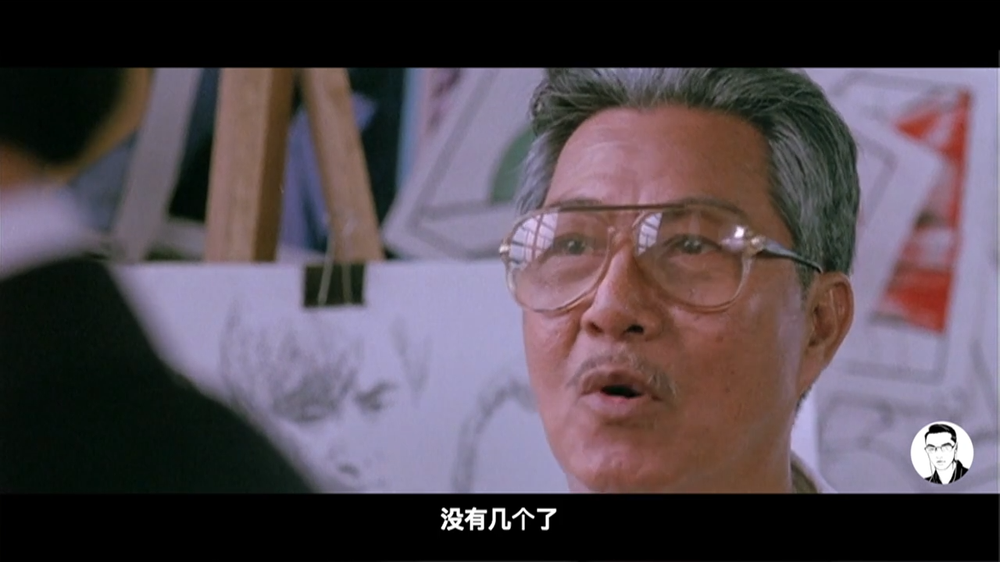
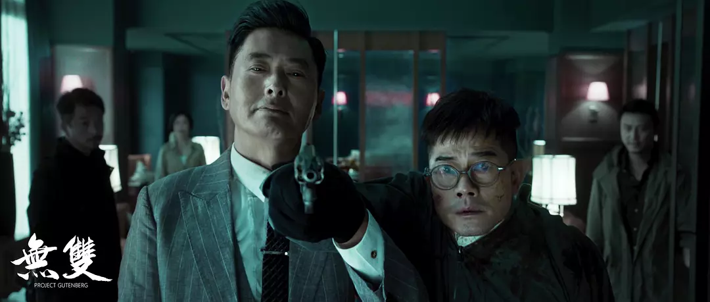
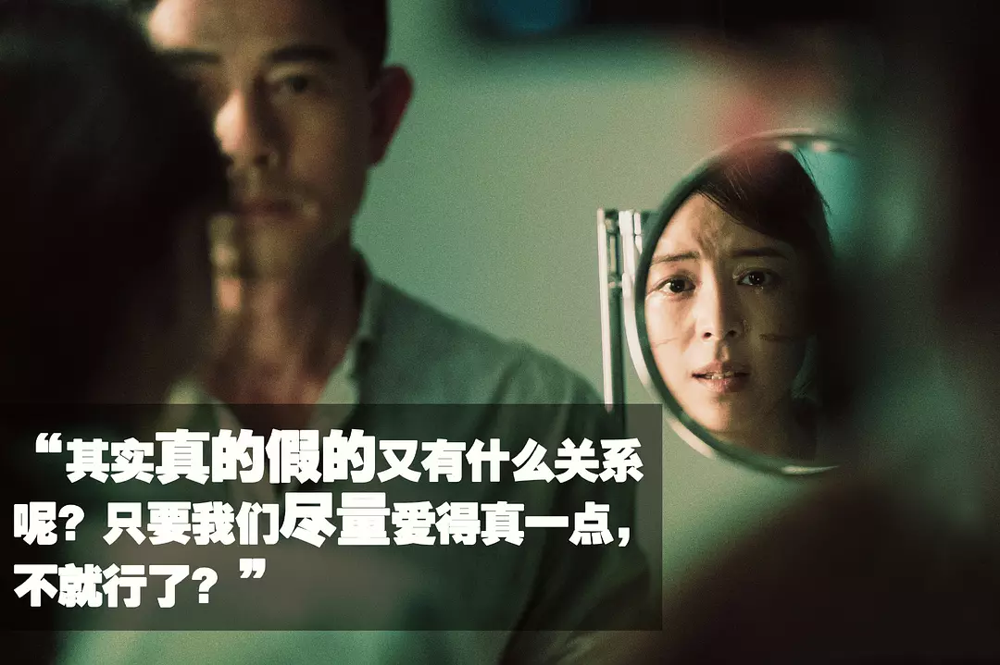
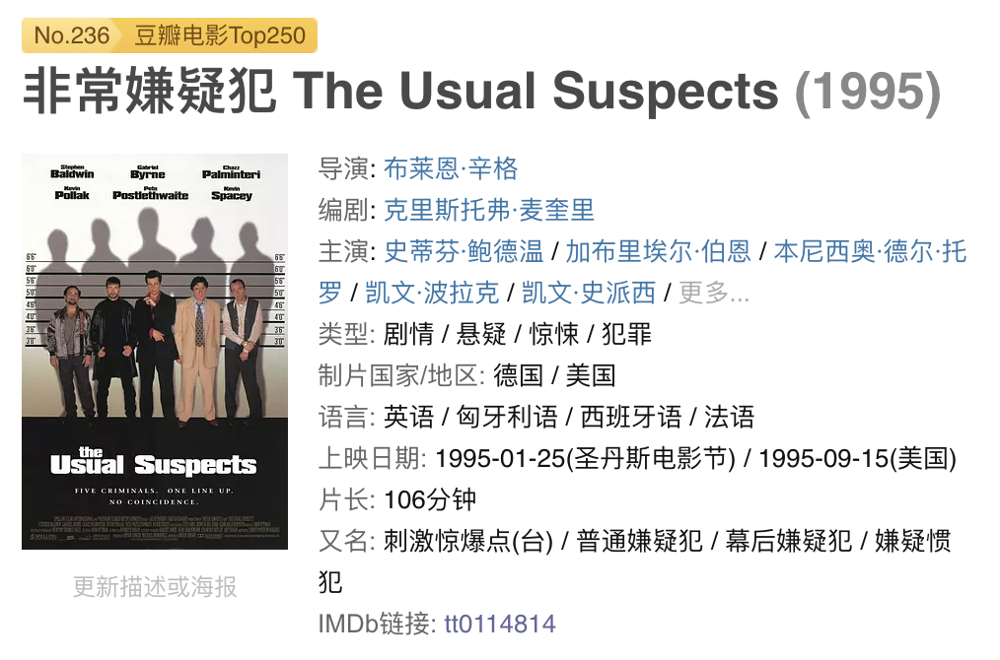

<!DOCTYPE html>
<html lang="en">

<!-- Head tag -->
<head>
    <meta charset="utf-8">
    <meta http-equiv="X-UA-Compatible" content="IE=edge">
    <meta name="google-site-verification" content="xBT4GhYoi5qRD5tr338pgPM5OWHHIDR6mNg1a3euekI" />
    <meta name="viewport" content="width=device-width, initial-scale=1">
    <meta name="description" content="做一枚冲着天空的芒刺">
    <meta name="keyword"  content="科技">
    <link rel="shortcut icon" href="/img/javalover93_github.png">
    <!-- Place this tag in your head or just before your close body tag. -->
    <script async defer src="https://buttons.github.io/buttons.js"></script>
    <title>
        
          真爱无双 - 芒刺空间 | Maants Space
        
    </title>

    <link rel="canonical" href="http://blog.maants.space/2018/10/05/真爱无双/">

    <!-- Bootstrap Core CSS -->
    <link rel="stylesheet" href="/css/bootstrap.min.css">

    <!-- Custom CSS -->
    <link rel="stylesheet" href="/css/beantech.min.css">

    <!-- Pygments Highlight CSS -->
    <link rel="stylesheet" href="/css/highlight.css">

    <link rel="stylesheet" href="/css/widget.css">

    <link rel="stylesheet" href="/css/rocket.css">

    <link rel="stylesheet" href="/css/signature.css">

    <link rel="stylesheet" href="/css/toc.css">

    <!-- Custom Fonts -->
    <!-- <link href="https://maxcdn.bootstrapcdn.com/font-awesome/4.3.0/css/font-awesome.min.css" rel="stylesheet" type="text/css"> -->
    <!-- Hux change font-awesome CDN to qiniu -->
    <link href="https://cdn.staticfile.org/font-awesome/4.5.0/css/font-awesome.min.css" rel="stylesheet" type="text/css">


    <!-- Hux Delete, sad but pending in China
    <link href='http://fonts.googleapis.com/css?family=Lora:400,700,400italic,700italic' rel='stylesheet' type='text/css'>
    <link href='http://fonts.googleapis.com/css?family=Open+Sans:300italic,400italic,600italic,700italic,800italic,400,300,600,700,800' rel='stylesheet' type='text/
    css'>
    -->


    <!-- HTML5 Shim and Respond.js IE8 support of HTML5 elements and media queries -->
    <!-- WARNING: Respond.js doesn't work if you view the page via file:// -->
    <!--[if lt IE 9]>
        <script src="https://oss.maxcdn.com/libs/html5shiv/3.7.0/html5shiv.js"></script>
        <script src="https://oss.maxcdn.com/libs/respond.js/1.4.2/respond.min.js"></script>
    <![endif]-->

    <!-- ga & ba script hoook -->
    <script></script>
</head>


<!-- hack iOS CSS :active style -->
<body ontouchstart="">
	<!-- Modified by Yu-Hsuan Yen -->
<!-- Post Header -->
<style type="text/css">
    header.intro-header{
        
            background-image: url('null')
            /*post*/
        
    }
    
</style>

<header class="intro-header" >
    <!-- Signature -->
    <div id="signature">
        <div class="container">
            <div class="row">
                <div class="col-lg-8 col-lg-offset-2 col-md-10 col-md-offset-1">
                
                    <div class="post-heading">
                        <div class="tags">
                            
                              <a class="tag" href="/tags/#影评" title="影评">影评</a>
                            
                        </div>
                        <h1>真爱无双</h1>
                        <h2 class="subheading"></h2>
                        <span class="meta">
                            Posted by Javalover93 on
                            2018-10-05
                        </span>
                    </div>
                


                </div>
            </div>
        </div>
    </div>
</header>

	
    <!-- Navigation -->
<nav class="navbar navbar-default navbar-custom navbar-fixed-top">
    <div class="container-fluid">
        <!-- Brand and toggle get grouped for better mobile display -->
        <div class="navbar-header page-scroll">
            <button type="button" class="navbar-toggle">
                <span class="sr-only">Toggle navigation</span>
                <span class="icon-bar"></span>
                <span class="icon-bar"></span>
                <span class="icon-bar"></span>
            </button>
            <a class="navbar-brand" href="/">Maants Space</a>
        </div>

        <!-- Collect the nav links, forms, and other content for toggling -->
        <!-- Known Issue, found by Hux:
            <nav>'s height woule be hold on by its content.
            so, when navbar scale out, the <nav> will cover tags.
            also mask any touch event of tags, unfortunately.
        -->
        <div id="huxblog_navbar">
            <div class="navbar-collapse">
                <ul class="nav navbar-nav navbar-right">
                    <li>
                        <a href="/">Home</a>
                    </li>

                    

                        
                    

                        
                        <li>
                            <a href="/about/">About</a>
                        </li>
                        
                    

                        
                        <li>
                            <a href="/archive/">Archives</a>
                        </li>
                        
                    

                        
                        <li>
                            <a href="/tags/">Tags</a>
                        </li>
                        
                    
                    
                </ul>
            </div>
        </div>
        <!-- /.navbar-collapse -->
    </div>
    <!-- /.container -->
</nav>
<script>
    // Drop Bootstarp low-performance Navbar
    // Use customize navbar with high-quality material design animation
    // in high-perf jank-free CSS3 implementation
    var $body   = document.body;
    var $toggle = document.querySelector('.navbar-toggle');
    var $navbar = document.querySelector('#huxblog_navbar');
    var $collapse = document.querySelector('.navbar-collapse');

    $toggle.addEventListener('click', handleMagic)
    function handleMagic(e){
        if ($navbar.className.indexOf('in') > 0) {
        // CLOSE
            $navbar.className = " ";
            // wait until animation end.
            setTimeout(function(){
                // prevent frequently toggle
                if($navbar.className.indexOf('in') < 0) {
                    $collapse.style.height = "0px"
                }
            },400)
        }else{
        // OPEN
            $collapse.style.height = "auto"
            $navbar.className += " in";
        }
    }
</script>


    <!-- Main Content -->
    <!-- Modify by Yu-Hsuan Yen -->

<!-- Post Content -->
<article>
    <div class="container">
        <div class="row">

            <!-- Post Container -->
            <div class="
                col-lg-8 col-lg-offset-2
                col-md-10 col-md-offset-1
                post-container">

                <h1 id="真爱无双">真爱无双</h1>
<p>看完电影《无双》后，随手翻看知乎、豆瓣上的评论与讨论，看到大家言不及义的样子，的确令人着急。《无双》做为一部水平及格的普通电影，似乎正处于资深观影者不屑于讨论，看懂了的观众懒得讨论和没看懂的瞎讨论的困境里。甚至连电影的宣发都给出了不能算是正确的引导。</p>
<p>《无双》讲述的是一个爱情悲剧：一位奋斗男青年爱情事业双失败，走上造假艺术品造假币的犯罪道路，期间结识一位女青年并视其为心中女神的替代品，犯罪成功腰缠万贯后想寻回旧爱，却死于苦恋于他的替代品女青年的殉情。</p>
<p>是否秒懂？</p>
<p>如果恰好你的观点也类似，那不妨交个朋友吧。毕竟我们这样的人，没有几个了。</p>
<p><br>
</p>
<p>具体地说一下：</p>
<p>画家李问（郭富城饰演）在加拿大追求自己的艺术事业，同时暗恋着隔壁小有成就的女画家阮文（张静初饰演）。出于自卑等各方面原因，李问总是远远地注视着阮文和阮文的成功。在片尾有一个李问和鑫叔在的加拿大工作间的镜头，而且鑫叔说“努力工作赚钱，有了钱还怕没有女人”这样的话。这说明鑫叔也是阮文的邻居，至少对李问对阮问的爱慕是知晓的。李问和鑫叔两人的工作间没有阮文一人的大，而且阮文要开办个人展览了。各方面的剧情说明，加拿大时期的李问不但在艺术事业上成功地发展，而且生活拮据，可能因此走上制假的道路。当然也有可能李问是的确三代造假，但是，可能性不大，也不重要。总之，李问的起点很低，有野心，但是内心自卑压抑，有点仇视异性，可能有点精神分裂。</p>
<p></p>
<p>在阮文的画家事业起飞之后，她搬家了。李问也离开了原来的住处，开始全情投入地参与到制造假美钞的技术攻关里。然后在加拿大公路抢劫时，情绪失控，杀了一车警察。Wait！电影里不是画家（周润发饰演）杀的吗？</p>
<p>是的。是画家杀的，但是不存在一个画家画家，而只有一个画家李问。前面说到的精神分裂嫌疑就在这里。「画家」是李问野心勃勃意气风发但是无恶不作的一面，「李问」是画家畏畏缩缩唯唯诺诺但是有情有义的一面。画家李问，一人二身，分开就是「画家」+「李问」。李问需要一个强大的精神力量支持他前进，他赋予了画家发哥的风流和自己内心压抑的癫狂。但是李问本质上还有善的一面，他需要这个善良又精通技术的一面来面对阮文和自己，所以他还是电影开头那个吓得不行的李问。大部分人，应该能够分辨到这一层吧。网上看通了电影的评论基本也就到此止步，感叹人物，感叹发哥而已。</p>
<p></p>
<p>为什么说李问仇视异性呢？虽然没有直接的剧情表现他专门针对女性。但是影片里的暗示已经足够多了。一是变色油漆押运车里开枪打中李问的警察，是女性。如果没有记错，李问在交战中就已经中枪，但却在被唯一的女警察击中后下了杀心。二是后面的杀女管家。</p>
<p>技术攻关只剩最后一项–变色油墨。大约在变色油墨攻关实现的那段时间里，李问团队在泰国做商业拓展，遇到了将军和将军的技术员吴秀清。吴秀清对李问的技术评价很高，而且吴的外貌轮廓长得有点像阮文。泰国有一场李问打翻油墨，被画家大骂的戏。李问被骂时，吴的脸倒影在玻璃上，导演几乎是赶鸭子上架似的让吴李相互产生情愫。在一场火并之后，李问救出吴秀清，并给吴做了整容手术，吴获得了和阮文一模一样的面貌。因为换了一张好看的脸，吴高兴地爱上了李（剧情就那么快，我也很无奈）。此处不敢思考的是，吴被救出时似乎面部伤势不重，但是上吉普车后，被李问包扎地像是重度烧伤。有待重新观看查证。如果是的，那么李问的变态已经……</p>
<p></p>
<p>总之，吴秀清加入了李问团队，成了阮文的影子。</p>
<p>突然有一天，吴秀清发现自己是阮文的影子，难以忍受。某日，香港酒店里，李问杀死了加拿大警察，又迅即被吴秀清逼宫。李问难以下手，被两个男手下拿枪指头。女管家突然发难，打死两个男手下，李问中枪，女管家欲杀吴秀清，居然被李问捅死。乱得难以理解吧。吴秀清策反了两个男手下，此处不做猜测。但是现场奇怪地是女管家枪指吴，吴枪指着床上的一对儿，两个男打手枪指着李问。吴难道误判，没有成功策反女管家吗？</p>
<p>李问杀女管家最为精彩。为什么？李问以为阮文已死，那就只有吴秀清了，他不能让女管家杀死吴，所以他杀了女管家。换一种思路，如果阮文没死，李问暂时也无法和阮在一起，吴的尸体又不能被阮知道，他又可能自己对吴下不去手，气急败坏之下，杀了另外一个女人。猜测二比较薄弱，但是如果成立，李问仇视女性的程度就……</p>
<p>总之，死了一堆人，要去避风头。李问和吴回了泰国。有一天，李问发现阮文没死，他打算去见她，再续前缘。李问前脚出门，后脚吴就联系了警察把李问关了起来。罪名是制造假钞。有趣的是，泰国地方警察也是显得要管美元假钞了，而且李问的钱是从香港拿回来的从加拿大警察手里拿的真钱。关了一段时间后，李问屈服了，自制蓝色墨水做了假邮票，靠记忆画了吴秀清整容前的画像。吴秀清深受感动，原谅他。结果李问被带到香港。吴秀清没有办法，只能以阮文的身份找到香港某大佬，保释李问。</p>
<p>李问在审讯室见到阮文，还是不愿意交代画家。阮文鼓励她说，李问借说话走动，上前确认阮文的身份，知道是吴秀清借用身份后开始大肆编造，获得了保释。</p>
<p></p>
<p>为爱鼓掌之后，吴秀清又问李问爱不爱的问题。李问回答“爱得真一点”，又建议两个人一起换脸。那就是不爱咯。吴泪下。第二天，吴秀清引爆了船上的炸弹。</p>
<p>好累。总体故事是这样的。</p>
<p>吴秀清就是真正的第二个剧情人物，一共有 2 个人扮演了这个角色。</p>
<p>就不说它「抄袭」了《最佳嫌疑犯》多少，剧情也算是 OK 的了。</p>
<p><br>
</p>
<p>无双的意思呢，就是没有第二个。</p>
<p>对于李问来说，他心里永远有那个阮文，没有人可以替代阮文。</p>
<p>对于吴秀清来说，她不要做第二个阮文，甚至她可以顶着阮文的脸，但是她不接受李问不爱她。</p>
<p>对于画家来说呢，只有一个画家，就是李问，没有第二个画家。</p>
<blockquote>
<p>如果你的发哥影迷，推荐一个视频咯。<a href="https://www.vmovier.com/54798?from=index_comment" target="_blank" rel="noopener">圈吉剪辑制作《一转身，他是市井买菜人》</a></p>
</blockquote>

                

                <hr>
                <!-- Pager -->
                <ul class="pager">
                    
                        <li class="previous">
                            <a href="/2018/10/06/Colorful-Data-数据可视化配色/" data-toggle="tooltip" data-placement="top" title="Colorful Data 数据可视化配色">&larr; Previous Post</a>
                        </li>
                    
                    
                        <li class="next">
                            <a href="/2018/08/25/芒刺周报-18-08-教育/" data-toggle="tooltip" data-placement="top" title="芒刺周报-18-08-教育">Next Post &rarr;</a>
                        </li>
                    
                </ul>

                <!-- duoshuo Share start -->
                
                <!-- 多说 Share end-->

                <!-- 多说评论框 start -->
                
                <!-- 多说评论框 end -->

                <!-- disqus comment start -->
                
                    <div class="comment">
                        <div id="disqus_thread" class="disqus-thread"></div>
                    </div>
                
                <!-- disqus comment end -->
            </div>
            
            <!-- Tabe of Content -->
            <!-- Table of Contents -->

    
      <style>
        span.toc-nav-number{
          display: none
        }
      </style>
    

    
      <aside id="sidebar">
        <div id="toc" class="toc-article">
        <strong class="toc-title">Contents</strong>
        
          <ol class="toc-nav"><li class="toc-nav-item toc-nav-level-1"><a class="toc-nav-link" href="#真爱无双"><span class="toc-nav-number">1.</span> <span class="toc-nav-text">真爱无双</span></a></li></ol>
        
        </div>
      </aside>
    


                
            <!-- Sidebar Container -->
            <div class="
                col-lg-8 col-lg-offset-2
                col-md-10 col-md-offset-1
                sidebar-container">

                <!-- Featured Tags -->
                
                <section>
                    <!-- no hr -->
                    <h5><a href="/tags/">FEATURED TAGS</a></h5>
                    <div class="tags">
                       
                          <a class="tag" href="/tags/#影评" title="影评">影评</a>
                        
                    </div>
                </section>
                

                <!-- Friends Blog -->
                
                <hr>
                <h5>FRIENDS</h5>
                <ul class="list-inline">

                    
                        <li><a href="http://beantech.org" target="_blank">Bean Tech</a></li>
                    
                </ul>
                
            </div>
        </div>
    </div>
</article>


<!-- disqus embedded js code start (one page only need to embed once) -->
<script type="text/javascript">
    /* * * CONFIGURATION VARIABLES * * */
    var disqus_shortname = "your-disqus-ID";
    var disqus_identifier = "http://blog.maants.space/2018/10/05/真爱无双/";
    var disqus_url = "http://blog.maants.space/2018/10/05/真爱无双/";

    (function() {
        var dsq = document.createElement('script'); dsq.type = 'text/javascript'; dsq.async = true;
        dsq.src = '//' + disqus_shortname + '.disqus.com/embed.js';
        (document.getElementsByTagName('head')[0] || document.getElementsByTagName('body')[0]).appendChild(dsq);
    })();
</script>
<!-- disqus embedded js code start end -->


<!-- async load function -->
<script>
    function async(u, c) {
      var d = document, t = 'script',
          o = d.createElement(t),
          s = d.getElementsByTagName(t)[0];
      o.src = u;
      if (c) { o.addEventListener('load', function (e) { c(null, e); }, false); }
      s.parentNode.insertBefore(o, s);
    }
</script>
<!-- anchor-js, Doc:http://bryanbraun.github.io/anchorjs/ -->
<script>
    async("https://cdn.bootcss.com/anchor-js/1.1.1/anchor.min.js",function(){
        anchors.options = {
          visible: 'hover',
          placement: 'left',
          icon: 'ℬ'
        };
        anchors.add().remove('.intro-header h1').remove('.subheading').remove('.sidebar-container h5');
    })
</script>
<style>
    /* place left on bigger screen */
    @media all and (min-width: 800px) {
        .anchorjs-link{
            position: absolute;
            left: -0.75em;
            font-size: 1.1em;
            margin-top : -0.1em;
        }
    }
</style>


    <!-- Footer -->
    <!-- Footer -->
<footer>
    <div class="container">
        <div class="row">
            <div class="col-lg-8 col-lg-offset-2 col-md-10 col-md-offset-1">
                <ul class="list-inline text-center">
                
                    <li>
                        <a href="/feed.xml">
                            <span class="fa-stack fa-lg">
                                <i class="fa fa-circle fa-stack-2x"></i>
                                <i class="fa fa-rss fa-stack-1x fa-inverse"></i>
                            </span>
                        </a>
                    </li>
                
                
                

                

                

                
                    <li>
                        <a target="_blank"  href="https://github.com/Javalover93">
                            <span class="fa-stack fa-lg">
                                <i class="fa fa-circle fa-stack-2x"></i>
                                <i class="fa fa-github fa-stack-1x fa-inverse"></i>
                            </span>
                        </a>
                    </li>
                

                

                </ul>
                <p class="copyright text-muted">
                    Copyright &copy; Javalover93 2019 
                    <br>
                    Theme by <a href="http://huangxuan.me">Hux</a> 
                    <span style="display: inline-block; margin: 0 5px;">
                        <i class="fa fa-heart"></i>
                    </span> 
                    re-Ported by <a href="http://beantech.org">BeanTech</a> | 
                    <iframe
                        style="margin-left: 2px; margin-bottom:-5px;"
                        frameborder="0" scrolling="0" width="91px" height="20px"
                        src="https://ghbtns.com/github-btn.html?user=YenYuHsuan&repo=hexo-theme-beantech&type=star&count=true" >
                    </iframe>
                </p>
            </div>
        </div>
    </div>
</footer>

<!-- jQuery -->
<script src="/js/jquery.min.js"></script>

<!-- Bootstrap Core JavaScript -->
<script src="/js/bootstrap.min.js"></script>

<!-- Custom Theme JavaScript -->
<script src="/js/hux-blog.min.js"></script>


<!-- async load function -->
<script>
    function async(u, c) {
      var d = document, t = 'script',
          o = d.createElement(t),
          s = d.getElementsByTagName(t)[0];
      o.src = u;
      if (c) { o.addEventListener('load', function (e) { c(null, e); }, false); }
      s.parentNode.insertBefore(o, s);
    }
</script>

<!-- 
     Because of the native support for backtick-style fenced code blocks 
     right within the Markdown is landed in Github Pages, 
     From V1.6, There is no need for Highlight.js, 
     so Huxblog drops it officially.

     - https://github.com/blog/2100-github-pages-now-faster-and-simpler-with-jekyll-3-0  
     - https://help.github.com/articles/creating-and-highlighting-code-blocks/    
-->
<!--
    <script>
        async("http://cdn.bootcss.com/highlight.js/8.6/highlight.min.js", function(){
            hljs.initHighlightingOnLoad();
        })
    </script>
    <link href="http://cdn.bootcss.com/highlight.js/8.6/styles/github.min.css" rel="stylesheet">
-->


<!-- jquery.tagcloud.js -->
<script>
    // only load tagcloud.js in tag.html
    if($('#tag_cloud').length !== 0){
        async("http://blog.maants.space/js/jquery.tagcloud.js",function(){
            $.fn.tagcloud.defaults = {
                //size: {start: 1, end: 1, unit: 'em'},
                color: {start: '#bbbbee', end: '#0085a1'},
            };
            $('#tag_cloud a').tagcloud();
        })
    }
</script>

<!--fastClick.js -->
<script>
    async("https://cdn.bootcss.com/fastclick/1.0.6/fastclick.min.js", function(){
        var $nav = document.querySelector("nav");
        if($nav) FastClick.attach($nav);
    })
</script>


<!-- Google Analytics -->


<script>
    // dynamic User by Hux
    var _gaId = 'UA-123404328-2';
    var _gaDomain = 'blog.maants.space';

    // Originial
    (function(i,s,o,g,r,a,m){i['GoogleAnalyticsObject']=r;i[r]=i[r]||function(){
    (i[r].q=i[r].q||[]).push(arguments)},i[r].l=1*new Date();a=s.createElement(o),
    m=s.getElementsByTagName(o)[0];a.async=1;a.src=g;m.parentNode.insertBefore(a,m)
    })(window,document,'script','//www.google-analytics.com/analytics.js','ga');

    ga('create', _gaId, _gaDomain);
    ga('send', 'pageview');
</script>


<!-- Baidu Tongji -->


	<a id="rocket" href="#top" class=""></a>
	<script type="text/javascript" src="/js/totop.js?v=1.0.0" async=""></script>
    <script type="text/javascript" src="/js/toc.js?v=1.0.0" async=""></script>
<!-- Image to hack wechat -->

<!-- Migrate from head to bottom, no longer block render and still work -->

</body>

</html>
